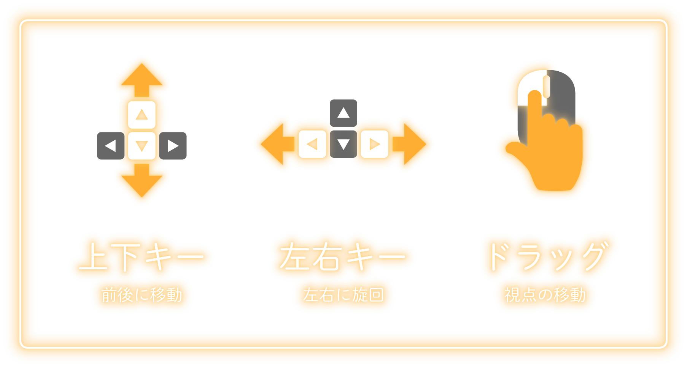

ゴール！
最後まで遊んでくれて、ありがとうございます
“エモ”の世界は、いかがでしたか？
あなたの感情から生まれた“エモ”は、どんな風に成長しましたか？
“エモ”の成長を通して、少しでも感情の交流を味わってもらえたら、幸いです
この作品は、オンラインでの交流時、
相手の感情が伝わりづらく不自由に感じるという気づきから生まれました
最近、私たちは、“エモ”のように、限られた方法で交流している気がします
不自由に思えるそんな交流の先には、
まだ見たことのない新しい景色が広がっているのではないでしょうか
もう一度、“エモ”の世界を体験したい方は、
こちら
制作展外でも、“エモ”と過ごしたい方は、Snap CameraやSnapchatで
"emotional distance"を検索！
（Snap CameraやSnapchatを利用した、
ZOOMなどビデオ通話アプリで使えるフィルターを手に入れることが出来ます）
※必ず右下のfull screenボタンを押して下さい
操作方法

ルール
1. 他の“エモ”に近づくと色が交換され、壁が少し下がります
2. できるだけいろいろな“エモ”と交流しましょう
3. 壁が下がり切って、外の世界が広がったらゴール！